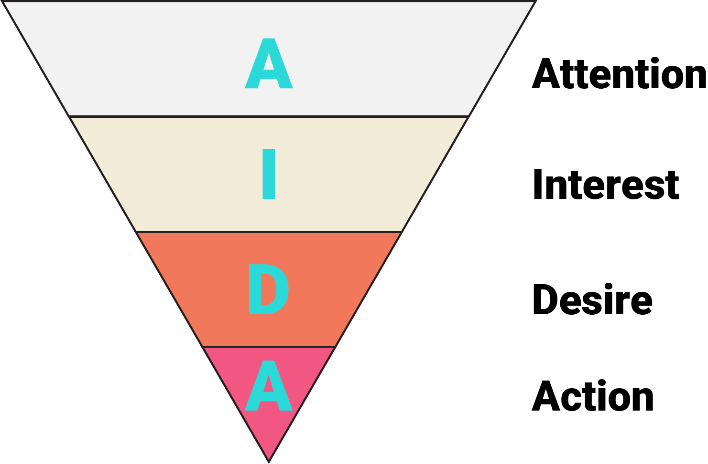
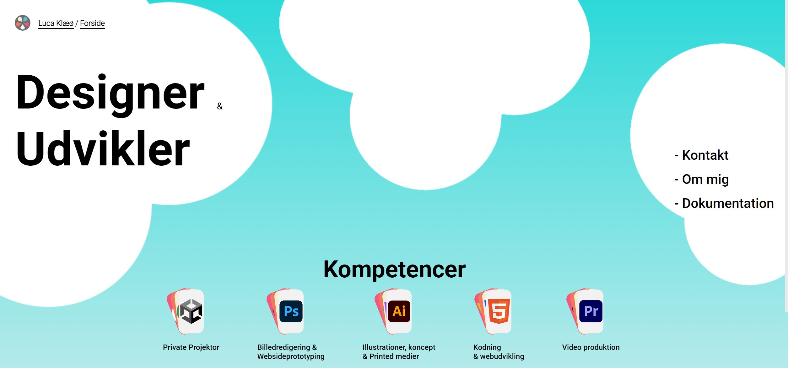
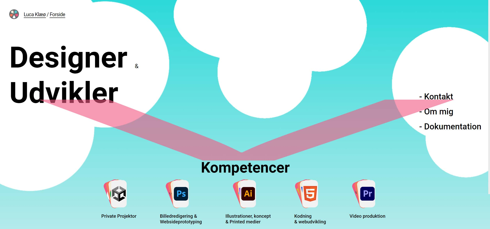
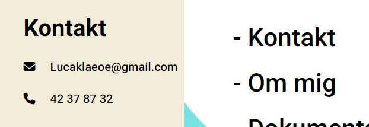

Når man benytter AIDA-modellen som skabelon for opbygning af hjemmesider og andre medieprodukter , er det vigtigt at have målet i tankerne. I dette tilfælde er mit mål at vise min primære målgruppe mine evner inde for design, kode og kreativitet, derudover vil jeg gerne vise min sekundære målgruppe, at jeg har styr på faget. Sidstnævnte er vigtigt, da det potentielt kan udvikle sig til, at fremtidige arbejdsgivere tager kontakt og tilbyder et arbejde.
Kilde fra bogen: Interfacedesign Fra idé til digital protorype, Side 53
Attention handler om at fange brugerens opmærksomhed. Hovedreglen er, at man har ca. 3 sekunder til at gøre dette. Hvis det ikke lykkes, kan det betyde, at brugeren klikker væk fra hjemmesiden. Se hvordan jeg har gjort dette under.
Interest er det næste step i AIDA-modellen. Her har jeg fanget min målgruppes opmærksomhed og skal nu vække deres interesse for, hvad hjemmesiden indeholder og tilbyder.Se hvordan jeg har gjort dette under
Desire er det sidste store step fra brugerens side. Det er her, de ønsker produktet eller budskabet, som bliver solgt til dem. Se hvordan jeg har gjort dette under
Action sker, når de tidligere tre steps er udført, og kunden har fundet "call to action"- knappen/linket. Se hvordan jeg har gjort dette under

På min side ses "attention" hurtigt på forsiden: Teksten "Designer & udvikler" fanger brugerens opmærksomhed. Derefter er det intentionen, at øjnene føres videre til "kompetencer" og derefter over de forskellige knapper - i en v-bevægelse. Alternativt føres øjnenes til de forskellige knapper, og derefter til "kompetencer" - som en z-bevægelse. Endeligt er mit farvevalg samt tekst designet til at være blikfangende.



Jeg vækker brugerens "interest" vha. effekterne på min forside; åbning af mapper, bevægelse i tekst. Derudover håber jeg at vække deres interesse yderligere, når de surfer rundt på side og læser omkring mine kompetencer.

Jeg har forsøgt at vække "lysten" for budskabet ved at lave effekter og tekster, som forklarer mine kompetencer og tidligere projekter. Hertil har jeg udviklet en hjemmeside, der er forholdsvis interaktiv. Årsagen til dette er, at brugervenlighed er designafhængigt - det afhænger ikke blot af, hvad der står på hjemmesiden.
Min "call to action"-knap er "kontaktknappen", som er lokaliseret footeren, der er tilgængelig på samtlige sider.
